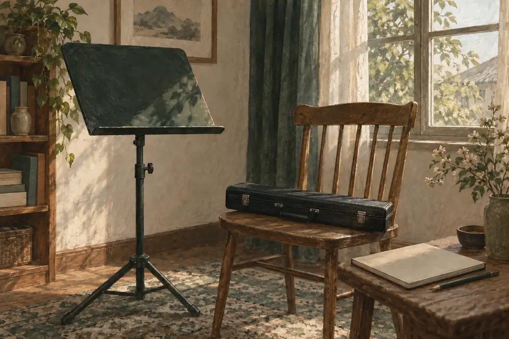

張老師音樂學院
課程
練習室
出品
學習指南
音樂手記
聯絡
Overture · 序曲
把一個音聽清楚，
讓音樂慢慢走近。
長笛、笛子、洞簫與空靈鼓。從自然的聲音、清楚的拍子，到一句有呼吸的旋律。
認識課程
進入練習室

張家詠老師 · 二十年教學經驗 · 香港屯門
Programme
今季課程
I
長笛課程
由第一個自然的音，走到有呼吸、有方向的旋律。
II
笛子課程
聽見竹聲的明亮，也學會其中的細節與分寸。
III
洞簫課程
從一道氣流開始，慢慢聽清一個音的來去。
IV
空靈鼓課程
讓每一下敲擊有位置，讓聲音之間有回應。
Practice Room
課後的練習室
No.1
調音器
音名、簡譜與音分
No.2
節拍器
細分拍與逐步加速
No.3
長笛指法表
三十四個基本指法
No.4
譜間
簡譜打譜工作室
No.5
長笛紙牌
網上翻卡先試玩
「音樂的細節，常在一次示範、一句回應與每天的小練習裏慢慢建立。」
← 01・序曲・返回